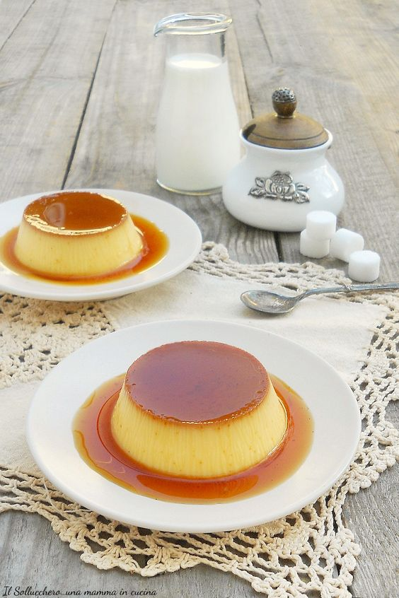

Crème Caramel

Crème Caramel is a timeless French dessert showcasing a smooth, creamy custard over a layer of golden caramel. Elegant and decadent, its velvety texture and delicate sweetness make it a delightful finale to any meal.
Ingredients:
For the caramel:
- 1 cup granulated sugar.
- 1/4 cup water
For the custard:
- 4 large eggs
- 2 cups whole milk
- 1/2 cup granulated sugar
- 1 teaspoon vanilla extract or vanilla bean (seeds scraped)
Recipe:
- Make the caramel by melting sugar and water until amber. Pour into ramekins and let it cool.
- Whisk eggs, sugar, and vanilla. Heat milk, then gradually mix it into the egg mixture.
- Strain the custard mix, pour into ramekins over the cooled caramel.
- Place ramekins in a larger pan, add hot water halfway up the sides, and bake at 325°F (160°C) for 45-50 mins.
- Let cool, then refrigerate for at least 4 hours or overnight.
- To serve, run a knife around edges, invert onto plates, allowing caramel to drizzle over the custard.